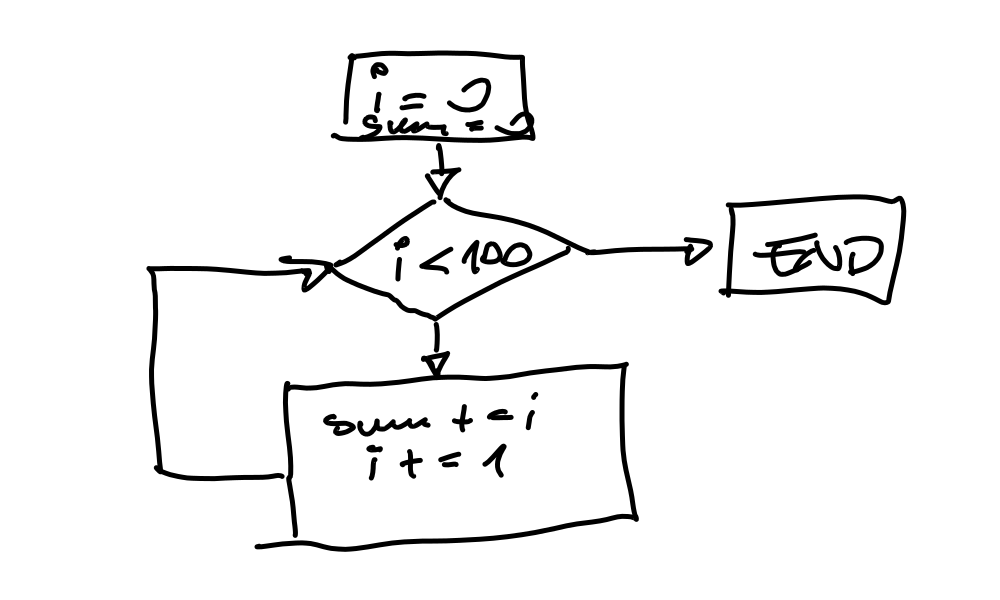

Programmierung Grundlagen, anhand von Python (2022-04-05 - 2022-04-08)¶
Überblick¶
Die Kurssprache des Kurses “Programmierung Grundlagen” ist Python; viele der Python-spezifische Elemente werden von hier unterrichtet.
Themenreihenfolge und Übungen werden aus dem Herdt-Skriptum “Programmierung Grundlagen mit Beispielen in Python” übernommen.
Das Herdt Skriptum ist etwas zu allgemein gehalten (geht auf Programmiersprachen im Allgemeinen ein, und ist dadurch verwirrend), weswegen in vielen Fällen Ausnahmen gemacht werden. Siehe hier für eine Zuordnung zu meinen Python Unterlagen.
Log¶
Tag 1¶
Variablen und Datentypen¶
{kind=link}
Kontrollstrukturen¶
Discussion: Flow Charts?¶
Which one is more clear?
|  | i = 0
sum = 0
while i < 100:
sum += i
i += 1
print(sum)
|
{kind=link}
Tag 2¶
-
Explaining
break: rolling-dice.py
Back to Exercise: Greeting, Depending on Time of Day
Additional feature: repeatedly prompt the user after bad input. For example, when the input for the sex is ‘z’, prompt her again. Do this until a valid sex is input.
Same if hour of day is not in 0-23.